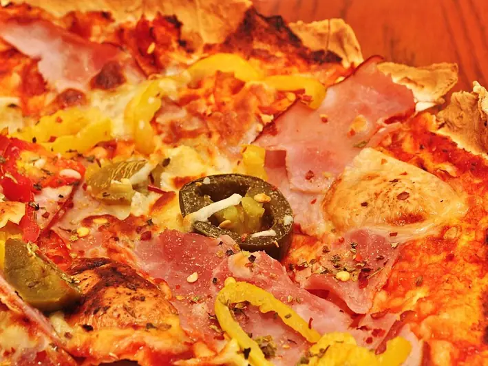

Фото: jeffreyw, CC BY 2.0
.jpg){kind=link}
Мини-пиццы на лаваше
Быстрые пиццы на тонком лаваше с ветчиной и сыром
25 мин4 порц.375 ккал на порциюБ 20 · Ж 19 · У 30Интернациональная кухня
Продукты на 4 порц.
- Лаваш тонкий2 шт
- Томатная паста2 ст. л.
- Вода30 мл
- Сушёные травы2 щеп.
- Ветчина150 г
- Сыр твёрдый150 г
- Помидоры1 шт
- Перец болгарский0,5 шт
- Кукуруза консервированная по желанию3 ст. л.
- Оливки / маслины по желаниюпо вкусу
Как готовить
- Сложите каждый лист лаваша вдвое и вырежьте стаканом или формочкой кружки диаметром 10-12 см, по два слоя.
- Смешайте томатную пасту с водой и сушёными травами до густоты соуса.
- Ветчину нарежьте кубиками, помидор и перец мелко, сыр натрите на тёрке.
- Выложите кружки на противень с бумагой, смажьте соусом, разложите ветчину, овощи и кукурузу, сверху сыр.
- Запекайте при 200 °C (сильный жар) 8-10 минут, пока сыр не расплавится, а края лаваша не подрумянятся.
Совет. Дайте детям самим собрать свои пиццы, это отличное развлечение на празднике. Двойной слой лаваша не размокает от соуса.